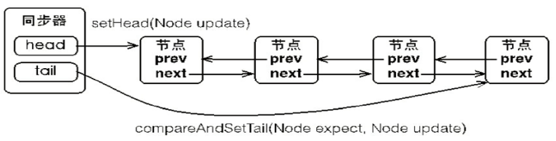

Synchronized 关键字结合对象的监视器，JVM 为我们提供了一种『内置锁』的语义，这种锁很简便，不需要我们关心加锁和释放锁的过程，我们只需要告诉虚拟机哪些代码块需要加锁即可，其他的细节会由编译器和虚拟机自己实现。
可以将我们的『内置锁』理解为是 JVM 的一种内置特性， 所以一个很显著的问题就是，它不支持某些高级功能的定制，比如说，我想要这个锁支持公平竞争，我想要根据不同的条件将线程阻塞在不同的队列上，我想要支持定时竞争锁，超时返回，我还想让被阻塞的线程能够响应中断请求等等。
这些特殊的需求是『内置锁』满足不了的，所以在 JDK 层面又引入了『显式锁』的概念，不再由 JVM 来负责加锁和释放锁，这两个动作释放给我们程序来做，程序层面难免复杂了些，但锁灵活性提高了，可以支持更多定制功能，但要求你对锁具有更深层次的理解。
Lock 接口位于 java.util.concurrent.locks 包下，基本定义如下：
public interface Lock {
//获取锁，失败则阻塞
void lock();
//响应中断式获取锁
void lockInterruptibly()
//尝试一次获取锁，成功返回true，失败返回false，不会阻塞
boolean tryLock();
//定时尝试
boolean tryLock(long time, TimeUnit unit)
//释放锁
void unlock();
//创建一个条件队列
Condition newCondition();
} 显式锁的实现类主要有三个，ReentrantLock 是其最主要的实现类，ReadLock 和 WriteLock 是 ReentrantReadWriteLock 内部定义的两个内部类，他们继承自 Lock 并实现了其定义的所有方法，精细化读写分离。而 ReentrantReadWriteLock 向外提供读锁写锁。
ReentrantLock 作为 Lock 显式锁的最基本实现，也是使用最频繁的一个锁实现类。可重入就是可以重新获取这个锁，例如递归操作。
它提供了两个构造函数，用于支持公平竞争锁。
public ReentrantLock()
//参数fair为是否支持公平竞争锁
public ReentrantLock(boolean fair) 公平锁和非公平锁的区别之处在于，公平锁在选择下一个占有锁的线程时，参考先到先得原则，等待时间越长的线程将具有更高的优先级。而非公平锁则无视这种原则。
那么假设这么一种情况，A 获得锁正在运行，B 尝试获得锁失败被阻塞，此时 C 也尝试获得锁，失败而阻塞，虽然 C 只需要很短运行时间，它依然需要等待 B 执行结束才有机会获得锁来运行。
非公平锁的前提下，A 执行结束，找到队列首部的 B 线程，开始上下文切换，假如此时的 C 过来竞争锁，非公平策略前提下，C 是可以获得锁的，并假设它迅速的执行结束了，当 B 线程被切换回来之后再去获取锁也不会有什么问题，结果是，C 线程在 B 线程的上下文切换过程中执行结束。显然，非公平策略下 CPU 的吞吐量是提高的。
但是，非公平策略的锁可能会造成某些线程饥饿，始终得不到运行，各有利弊，适时取舍。
① ReadWriteLock同Lock一样也是一个接口，提供了readLock和writeLock两种锁的操作机制，一个是只读的锁，一个是写锁。
读锁可以在没有写锁的时候被多个线程同时持有，写锁是独占的(排他的)。 每次只能有一个写线程，但是可以有多个线程并发地读数据。
所有读写锁的实现必须确保写操作对读操作的内存影响。换句话说，一个获得了读锁的线程必须能看到前一个释放的写锁所更新的内容。
理论上，读写锁比互斥锁允许对于共享数据更大程度的并发。与互斥锁相比，读写锁是否能够提高性能取决于读写数据的频率、读取和写入操作的持续时间、以及读线程和写线程之间的竞争。
② 互斥原则：
③ReentrantReadWriteLock
ReentrantReadWriteLock为ReadWriteLock的实现类
这个锁允许读线程和写线程以ReentrantLock的语法重新获取读写锁。在写入线程保持的所有写入锁被释放之前，不允许不可重入的读线程。
另外，写锁(写线程)可以获取读锁，但是不允许读锁(读线程)获取写锁。在其他应用程序中，当对在读锁下执行读取的方法或回调期间保持写锁时，可重入性可能非常有用。
实例代码如下：
public class TestReadWriteLock {
public static void main(String[] args){
final ReadWriteLockDemo rwd = new ReadWriteLockDemo();
//启动100个读线程
for (int i = 0; i < 100; i++) {
new Thread(new Runnable() {
@Override
public void run() {
rwd.get();
}
}).start();
}
//写线程
new Thread(new Runnable() {
@Override
public void run() {
rwd.set((int)(Math.random()*101));
}
},"Write").start();
}
}
class ReadWriteLockDemo{
//模拟共享资源--Number
private int number = 0;
// 实际实现类--ReentrantReadWriteLock，默认非公平模式
private ReadWriteLock readWriteLock = new ReentrantReadWriteLock();
//读
public void get(){
//使用读锁
readWriteLock.readLock().lock();
try {
System.out.println(Thread.currentThread().getName()+" : "+number);
}finally {
readWriteLock.readLock().unlock();
}
}
//写
public void set(int number){
readWriteLock.writeLock().lock();
try {
this.number = number;
System.out.println(Thread.currentThread().getName()+" : "+number);
}finally {
readWriteLock.writeLock().unlock();
}
}
}
/**
Thread-50 : 0
Thread-19 : 0
Thread-54 : 0
Thread-57 : 0
Thread-31 : 0
Write : 40
Thread-61 : 40
Thread-62 : 40
Thread-35 : 40
Thread-32 : 40
*/首先启动读线程，此时number为0；然后某个时刻写线程修改了共享资源number数据，读线程再次读取最新值
AQS是AbustactQueuedSynchronizer的简称，它是一个Java提供的底层同步工具类，用一个int类型的变量表示同步状态(state)，并提供了一系列的CAS操作来管理这个同步状态。AQS的主要作用是为Java中的并发同步组件提供统一的底层支持，例如ReentrantLock，CountdowLatch就是基于AQS实现的，用法是通过继承AQS实现其模版方法，然后将子类作为同步组件的内部类。
同步队列是AQS很重要的组成部分，它是一个双端队列，遵循FIFO原则，主要作用是用来存放在锁上阻塞的线程，当一个线程尝试获取锁时，如果已经被占用，那么当前线程就会被构造成一个Node节点加入到同步队列的尾部，队列的头节点是成功获取锁的节点，当头节点线程释放锁时，会唤醒后面的节点并释放当前头节点的引用。

AbstractQueuedSynchronizer维护了一个volatile int类型的变量，用户表示当前同步状态。volatile虽然不能保证操作的原子性，但是保证了当前变量state的可见性。至于volatile的具体语义，可以参考我的相关文章。state的访问方式有三种:
这三种叫做均是原子操作，其中compareAndSetState的实现依赖于Unsafe的compareAndSwapInt()方法。代码实现如下：
/**
* The synchronization state.
*/
private volatile int state;
/**
* Returns the current value of synchronization state.
* This operation has memory semantics of a {@code volatile} read.
* @return current state value
*/
protected final int getState() {
return state;
}
/**
* Sets the value of synchronization state.
* This operation has memory semantics of a {@code volatile} write.
* @param newState the new state value
*/
protected final void setState(int newState) {
state = newState;
}
/**
* Atomically sets synchronization state to the given updated
* value if the current state value equals the expected value.
* This operation has memory semantics of a {@code volatile} read
* and write.
*
* @param expect the expected value
* @param update the new value
* @return {@code true} if successful. False return indicates that the actual
* value was not equal to the expected value.
*/
protected final boolean compareAndSetState(int expect, int update) {
// See below for intrinsics setup to support this
return unsafe.compareAndSwapInt(this, stateOffset, expect, update);
} AQS定义两种资源共享方式：Exclusive（独占，只有一个线程能执行，如ReentrantLock）和Share（共享，多个线程可同时执行，如Semaphore/CountDownLatch）。
不同的自定义同步器争用共享资源的方式也不同。自定义同步器在实现时只需要实现共享资源state的获取与释放方式即可，至于具体线程等待队列的维护（如获取资源失败入队/唤醒出队等），AQS已经在顶层实现好了。自定义同步器实现时主要实现以下几种方法：
下面基于独占锁讲解在AQS获取锁和释放锁的流程：
获取：
源码解析：
acquire是一种以独占方式获取资源，如果获取到资源，线程直接返回，否则进入等待队列，直到获取到资源为止，且整个过程忽略中断的影响。该方法是独占模式下线程获取共享资源的顶层入口。获取到资源后，线程就可以去执行其临界区代码了。下面是acquire()的源码：
public final void acquire(int arg) {
if (!tryAcquire(arg) &&
acquireQueued(addWaiter(Node.EXCLUSIVE), arg))
selfInterrupt();
} tryAcquire尝试以独占的方式获取资源，如果获取成功，则直接返回true，否则直接返回false。该方法可以用于实现Lock中的tryLock()方法。该方法的默认实现是抛出UnsupportedOperationException，具体实现由自定义的扩展了AQS的同步类来实现。AQS在这里只负责定义了一个公共的方法框架。这里之所以没有定义成abstract，是因为独占模式下只用实现tryAcquire-tryRelease，而共享模式下只用实现tryAcquireShared-tryReleaseShared。如果都定义成abstract，那么每个模式也要去实现另一模式下的接口。
protected boolean tryAcquire(int arg) {
throw new UnsupportedOperationException();
} addWaiter该方法用于将当前线程根据不同的模式（Node.EXCLUSIVE互斥模式、Node.SHARED共享模式）加入到等待队列的队尾，并返回当前线程所在的结点。如果队列不为空，则以通过compareAndSetTail方法以CAS的方式将当前线程节点加入到等待队列的末尾。否则，通过enq(node)方法初始化一个等待队列，并返回当前节点。源码如下：
private Node addWaiter(Node mode) {
Node node = new Node(Thread.currentThread(), mode);
// Try the fast path of enq; backup to full enq on failure
Node pred = tail;
if (pred != null) {
node.prev = pred;
if (compareAndSetTail(pred, node)) {
pred.next = node;
return node;
}
}
enq(node);
return node;
}acquireQueued用于队列中的线程自旋地以独占且不可中断的方式获取同步状态（acquire），直到拿到锁之后再返回。该方法的实现分成两部分：如果当前节点已经成为头结点，尝试获取锁（tryAcquire）成功，然后返回；否则检查当前节点是否应该被park，然后将该线程park并且检查当前线程是否被可以被中断。
final boolean acquireQueued(final Node node, int arg) {
//标记是否成功拿到资源，默认true
boolean failed = true;
try {
boolean interrupted = false;//标记等待过程中是否被中断过
for (;;) {
final Node p = node.predecessor();
if (p == head && tryAcquire(arg)) {
setHead(node);
p.next = null; // help GC
failed = false;
return interrupted;
}
if (shouldParkAfterFailedAcquire(p, node) &&
parkAndCheckInterrupt())
interrupted = true;
}
} finally {
if (failed)
cancelAcquire(node);
}
}释放：
release方法是独占模式下线程释放共享资源的顶层入口。它会释放指定量的资源，如果彻底释放了（即state=0）,它会唤醒等待队列里的其他线程来获取资源。这也正是unlock()的语义，当然不仅仅只限于unlock()。下面是release()的源码：
public final boolean release(int arg) {
if (tryRelease(arg)) {
Node h = head;
if (h != null && h.waitStatus != 0)
unparkSuccessor(h);
return true;
}
return false;
}
/**
* Attempts to set the state to reflect a release in exclusive
* mode.
*
* <p>This method is always invoked by the thread performing release.
*
* <p>The default implementation throws
* {@link UnsupportedOperationException}.
*
* @param arg the release argument. This value is always the one
* passed to a release method, or the current state value upon
* entry to a condition wait. The value is otherwise
* uninterpreted and can represent anything you like.
* @return {@code true} if this object is now in a fully released
* state, so that any waiting threads may attempt to acquire;
* and {@code false} otherwise.
* @throws IllegalMonitorStateException if releasing would place this
* synchronizer in an illegal state. This exception must be
* thrown in a consistent fashion for synchronization to work
* correctly.
* @throws UnsupportedOperationException if exclusive mode is not supported
*/
protected boolean tryRelease(int arg) {
throw new UnsupportedOperationException();
}
/**
* Wakes up node's successor, if one exists.
*
* @param node the node
*/
private void unparkSuccessor(Node node) {
/*
* If status is negative (i.e., possibly needing signal) try
* to clear in anticipation of signalling. It is OK if this
* fails or if status is changed by waiting thread.
*/
int ws = node.waitStatus;
if (ws < 0)
compareAndSetWaitStatus(node, ws, 0);
/*
* Thread to unpark is held in successor, which is normally
* just the next node. But if cancelled or apparently null,
* traverse backwards from tail to find the actual
* non-cancelled successor.
*/
Node s = node.next;
if (s == null || s.waitStatus > 0) {
s = null;
for (Node t = tail; t != null && t != node; t = t.prev)
if (t.waitStatus <= 0)
s = t;
}
if (s != null)
LockSupport.unpark(s.thread);
} 与acquire()方法中的tryAcquire()类似，tryRelease()方法也是需要独占模式的自定义同步器去实现的。正常来说，tryRelease()都会成功的，因为这是独占模式，该线程来释放资源，那么它肯定已经拿到独占资源了，直接减掉相应量的资源即可(state-=arg)，也不需要考虑线程安全的问题。但要注意它的返回值，上面已经提到了，release()是根据tryRelease()的返回值来判断该线程是否已经完成释放掉资源了！所以自义定同步器在实现时，如果已经彻底释放资源(state=0)，要返回true，否则返回false。
unparkSuccessor(Node)方法用于唤醒等待队列中下一个线程。这里要注意的是，下一个线程并不一定是当前节点的next节点，而是下一个可以用来唤醒的线程，如果这个节点存在，调用unpark()方法唤醒。
总之，release()是独占模式下线程释放共享资源的顶层入口。它会释放指定量的资源，如果彻底释放了（即state=0）,它会唤醒等待队列里的其他线程来获取资源。
public class Mutex implements Lock {
// 静态内部类，自定义同步器
private static class Sync extends AbstractQueuedSynchronizer {
// 是否处于占用状态
protected boolean isHeldExclusively() {
return getState() == 1;
}
// 当状态为0的时候获取锁
public boolean tryAcquire(int acquires) {
if (compareAndSetState(0, 1)) {
setExclusiveOwnerThread(Thread.currentThread());
return true;
}
return false;
}
// 释放锁，将状态设置为0
protected boolean tryRelease(int releases) {
if (getState() == 0) throw new
IllegalMonitorStateException();
setExclusiveOwnerThread(null);
setState(0);
return true;
}
// 返回一个Condition，每个condition都包含了一个condition队列
Condition newCondition() {
return new ConditionObject();
}
}
// 仅需要将操作代理到Sync上即可
private final Sync sync = new Sync();
public void lock() {
sync.acquire(1);
}
public boolean tryLock() {
return sync.tryAcquire(1);
}
public void unlock() {
sync.release(1);
}
public Condition newCondition() {
return sync.newCondition();
}
public boolean isLocked() {
return sync.isHeldExclusively();
}
public boolean hasQueuedThreads() {
return sync.hasQueuedThreads();
}
public void lockInterruptibly() throws InterruptedException {
sync.acquireInterruptibly(1);
}
public boolean tryLock(long timeout, TimeUnit unit) throws InterruptedException {
return sync.tryAcquireNanos(1, unit.toNanos(timeout));
}
}